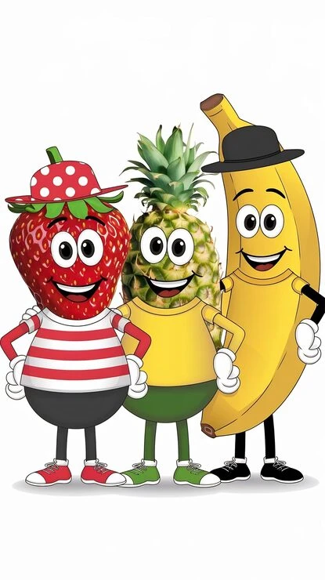

Home
A Vision, A Legacy: The Story of Extra Market
Founded in 2020 by Mr. Mabio Kouamé Charles Stéphane, Extra Market was born from a clear ambition: to streamline, enhance, and simplify the supply of premium raw materials and staple food products.
Origins and Genesis (2020)
The story begins at the heart of agricultural reality. Recognizing the logistical challenges faced by households, caterers, and agribusiness players in accessing fresh produce and reliable raw materials, Mr. Mabio Kouamé Charles Stéphane decided to build a modern solution. Extra Market was created with a fundamental mission: to build a direct, efficient bridge between agricultural production sites and end consumers, ensuring freshness, traceability, and competitive pricing.
A New Chapter: Leadership under Mme Mabio
To drive strategic growth and steer the company toward new horizons, Mr. Mabio entrusted the position of Managing Director to his wife, Mrs. Mabio Bienvenue Félicité. Under Mrs. Mabio's leadership, Extra Market strengthened its market position through:
- Operational excellence: Faster delivery times and strict quality control.
- An enhanced customer experience: Modernized digital storefront and personalized customer care.
- A commitment to food safety: Promoting healthy, accessible, and carefully selected food items.
Our Fresh Fruits

